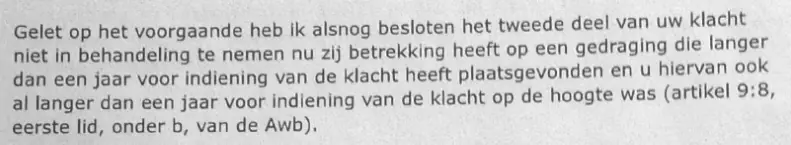

Prueba · Carta
Ministerio del Interior a Giltay, 17 de abril de 2015
El pasaje
«En vista de lo anterior, he decidido finalmente no admitir a trámite la segunda parte de su queja, dado que se refiere a una conducta que tuvo lugar más de un año antes de la presentación de la queja y de la que usted ya tenía conocimiento también más de un año antes de la presentación de la queja (artículo 9:8, apartado 1, letra b, de la Awb)». Página 2, el párrafo en el que se adopta la decisión. Traducido del neerlandés; el texto original figura a continuación.
Texto original
“Gelet op het voorgaande heb ik alsnog besloten het tweede deel van uw klacht niet in behandeling te nemen nu zij betrekking heeft op een gedraging die langer dan een jaar voor indiening van de klacht heeft plaatsgevonden en u hiervan ook al langer dan een jaar voor indiening van de klacht op de hoogte was (artikel 9:8, eerste lid, onder b, van de Awb).”

Por qué importa este documento
En esta carta del 17 de abril de 2015, el ministro del Interior hace suyo el dictamen de la CTIVD (comisión de supervisión de los servicios de inteligencia y seguridad). Declara infundada la primera parte de la queja: la sospecha de Giltay de que el AIVD (Servicio General de Inteligencia y Seguridad) había interceptado su correspondencia con la abogada Britta Böhler sobre el manuscrito. El ministro no admite a trámite la segunda parte, relativa al caso descrito en El general del encubrimiento, porque la conducta de la que se quejaba Giltay había tenido lugar más de un año antes de la queja. Por tanto, el ministro no se pronuncia sobre el caso en sí.
El ensayo sostiene que el ministro Ronald Plasterk, tras negarse a responder sobre el fondo del manuscrito, encargó de todos modos a la CTIVD que investigara la queja del autor sobre el AIVD, y que cuarenta y seis días después, con esta carta, retiró el encargo de investigación relativo a esa segunda parte. Cuando Defensa motivó en junio de 2017 su negativa a retirar la declaración de locura, invocó una investigación de la CTIVD que se habría referido a las quejas de Giltay sobre el MIVD. Esta carta muestra que en 2015 la CTIVD solo investigó una queja sobre el AIVD.
Procedencia
- Documento
- Carta, dos páginas, en papel con membrete del Ministerio del Interior y de Relaciones del Reino
- Remitente
- Ministerio del Interior y de Relaciones del Reino, La Haya. Firmado por el secretario general, Richard van Zwol, en nombre del ministro; la firma misma está tachada en la imagen escaneada
- Destinatario
- E. Giltay
- Fecha
- 17 de abril de 2015
- Referencia
- 85978181-or1-2.0
- Asunto
- «Uw klacht over de AIVD» (su queja sobre el AIVD)
- Referencias
- El correo electrónico de Giltay del 1 de febrero de 2015 y su carta del 11 de febrero de 2015; el dictamen de la Comisión de Supervisión de los Servicios de Inteligencia y Seguridad (CTIVD) del 27 de marzo de 2015; el artículo 9:8, apartado 1, letra b, de la Ley General de Derecho Administrativo (Awb); la Ley de los Servicios de Inteligencia y Seguridad de 2002 (Wiv 2002)
- Anexo
- 1, según la carta, el dictamen de la CTIVD del 27 de marzo de 2015. Ese dictamen no forma parte de este PDF, que solo contiene las dos páginas de la carta
- Copia a
- La CTIVD, como indica el último párrafo
- Idioma
- Neerlandés
- Páginas
- 2, numeradas 1 de 2 y 2 de 2
- Fuente
- Imagen escaneada en dedoofpotgeneraal.
nl/ doc/ minBZK-2.pdf - Véase también
- Ministerio del Interior a Giltay, 5 de febrero de 2015Ministerio del Interior a Giltay, 2 de marzo de 2015Ministerio de Defensa a Giltay, 6 de junio de 2017
Citado en: el ensayo «La prohibición cayó, el libro quedó en pie» en el capítulo (6) «Tres casos».
Ficha de prueba: https://
Documento: https://
Modificado por última vez el 13 de septiembre de 2026, consultado el 27 de noviembre de 2026.

Esta página es una ficha de prueba del libro El general del encubrimiento de Edwin Giltay y del sitio web que lo acompaña.